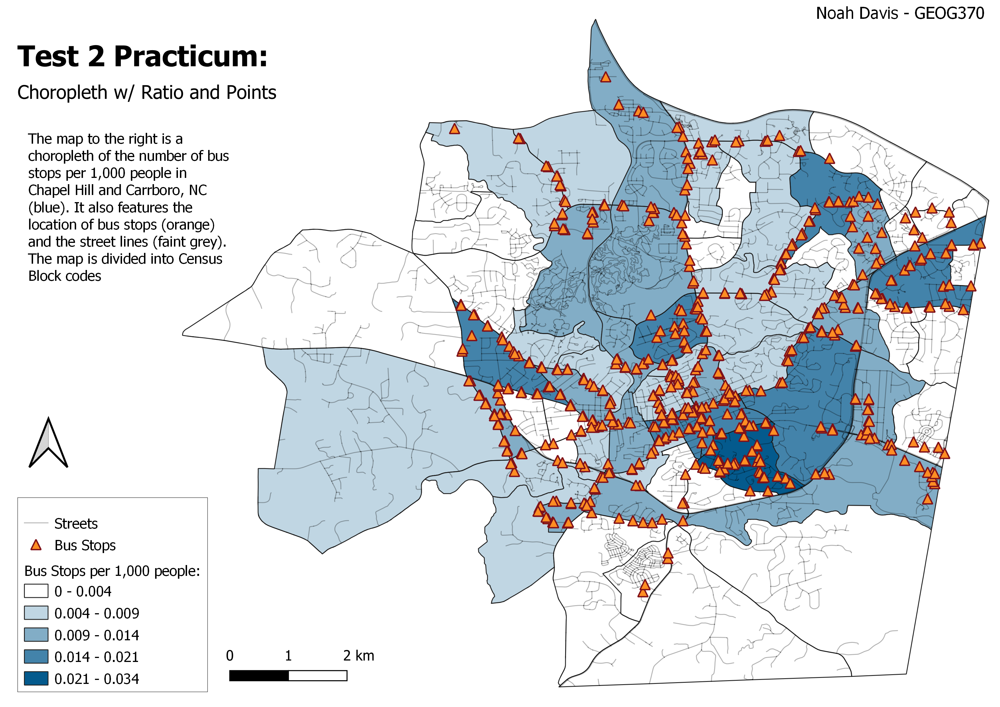

Test 2 Practicum
My Map
For a more detailed project abstract, please see "Interactive Map" below . . .

Interactive Version:
More about the interactive map:
- The project abstract can be viewed by hovering over the "i" in the upper-right-hand corner
- Layers can be toggled using the checkboxes directly below the abstract box
- Click on a census block or individual bus stop to see more data
- To view the map in a new tab, click "Interactive Version:" above
Data used for this project: